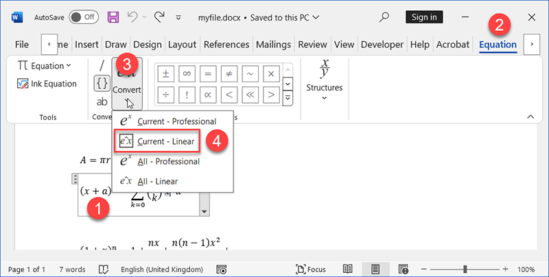
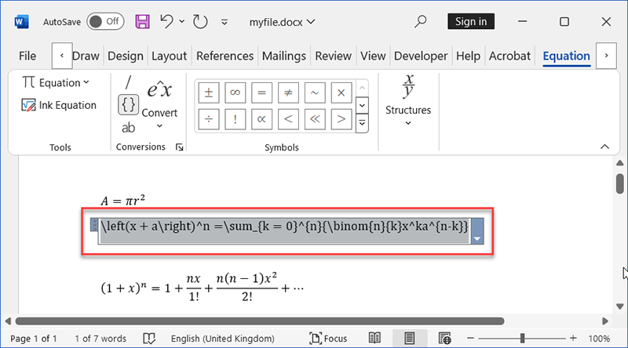
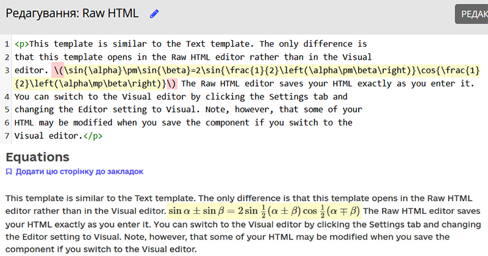
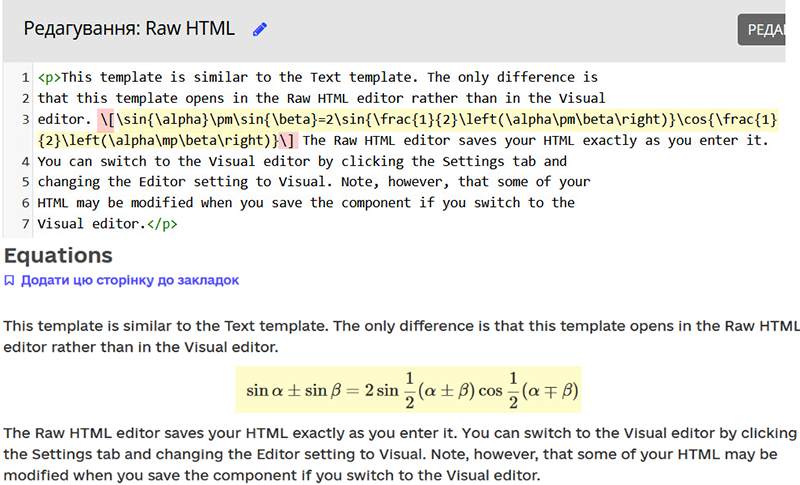
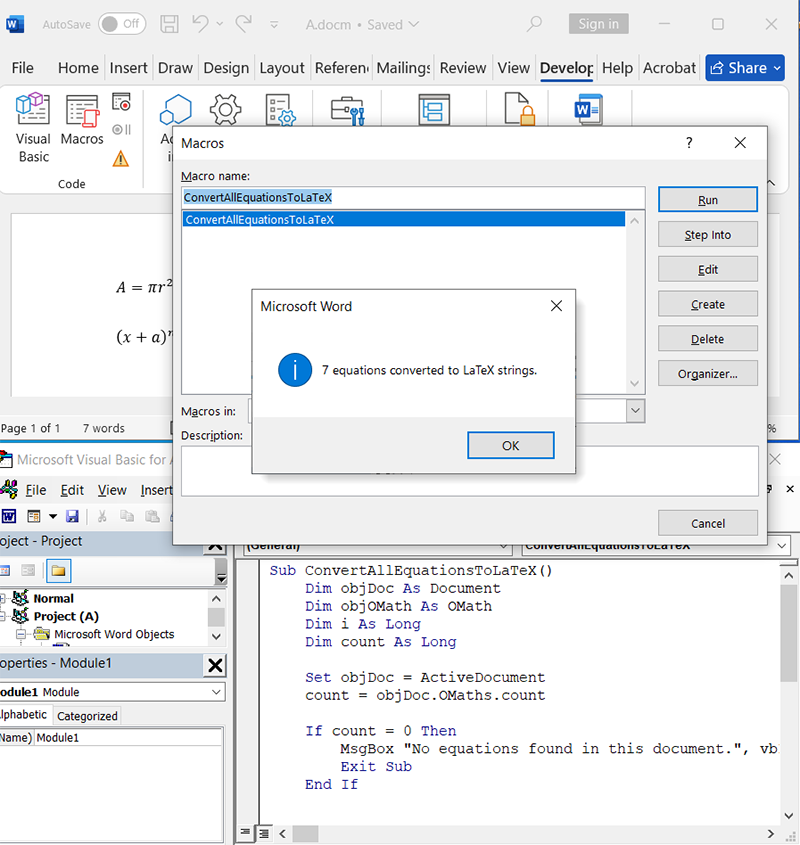
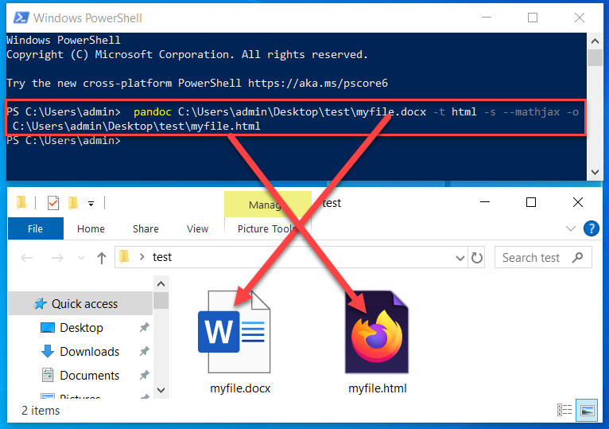
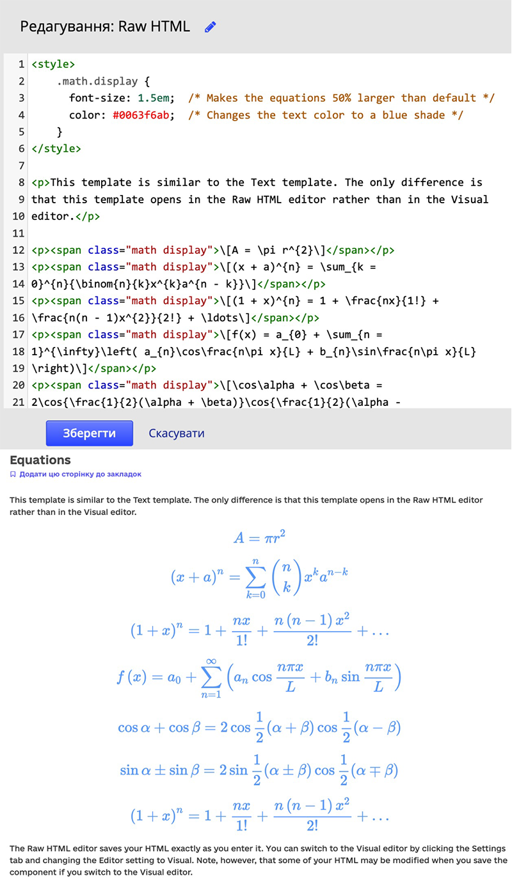
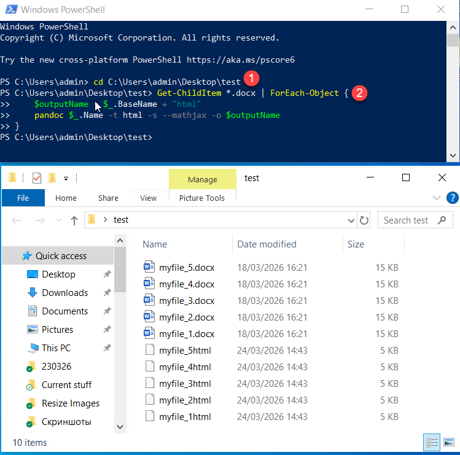
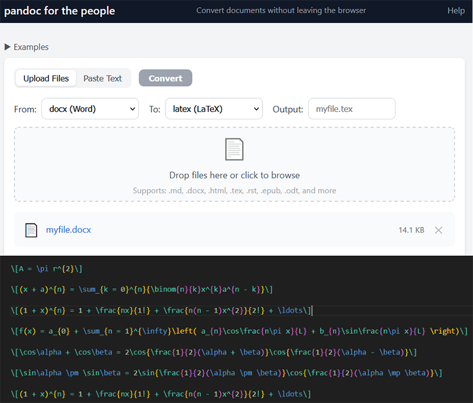

Як швидко конвертувати формули з Word для Open edX
На минулому занятті прозвучало цікаве питання: як оперативно перетворити формули, набрані у Word, у формат, придатний для платформи Open edX. Я вирішив детальніше дослідити це завдання.
Для прикладу я використовував Microsoft Office версії 2408. Хоча інтерфейс новіших версій може дещо відрізнятися, загальний алгоритм залишається незмінним.
Спосіб 1: Ручне перетворення через інтерфейс Word
Покрокова інструкція:
- Виділіть потрібну формулу в документі.
- Перейдіть на вкладку Equation (Рівняння/Конструктор формул), що з'являється у верхній панелі.
- У блоці Conversions (Перетворення) натисніть кнопку Convert (Перетворити).
- У випадаючому меню оберіть пункт Current — Linear (Поточний — Лінійний).

В результаті ми отримаємо рядок коду у форматі LaTeX. Тепер його можна скопіювати та вставити у практично будь-який компонент Open edX (наприклад, Raw HTML).

Важливо: код необхідно обгорнути спеціальними маркерами:
\( ... \) — для формул вбудованих у рядок тексту (Inline)

або \[ ... \] — для блокових рівнянь (які потребують окремого вирівнювання по рядку та центру — Block).

Порада: Якщо у файлі багато формул, замість Current виберіть пункт All — Linear — це конвертує всі об'єкти в документі одночасно. Щоб повернути формули до початкового вигляду, оберіть Current / All — Professional.
Спосіб 2: Використання макросів (VBA)
Якщо вам потрібно автоматизувати цей процес для великої кількості документів, можна скористатися макросом. Ось приклад код, який конвертує всі формули у формат Linear:
Sub ConvertAllEquationsToLaTeX()
Dim objDoc As Document
Dim objOMath As OMath
Dim i As Long
Dim count As Long
Set objDoc = ActiveDocument
count = objDoc.OMaths.Count
If count = 0 Then
MsgBox "No equations found in this document.", vbInformation
Exit Sub
End If
' Turn off screen updating for speed
Application.ScreenUpdating = False
' Set the default math target to LaTeX
Application.OMathAutoCorrect.UseOutsideOMath = True
For i = count To 1 Step -1
Set objOMath = objDoc.OMaths(i)
' 1. Ensure the equation is in LaTeX mode
' 2. Linearize converts the visual equation to the LaTeX string
objOMath.Linearize
Next i
Application.ScreenUpdating = True
MsgBox count & " equations converted to LaTeX strings.", vbInformation
End Sub

Спосіб 3: Конвертація через Pandoc
Ще один професійний шлях — конвертація файлів Word (.docx) у HTML за допомогою потужної утиліти Pandoc.
Після інсталяції програму потрібно запускати через PowerShell / Command Prompt (Windows) або Terminal (Mac). Наприклад, для конвертації файлу з папки 'test', розташованій на робочому столі, використовується така команда:

Переваги Pandoc:
- Програма автоматично додає "обгортки" для формул. Ви отримуєте готовий HTML-код, який можна просто скопіювати в Open edX.
- Можливість додаткового форматування: наприклад, можна налаштувати автоматичне збільшення шрифту формул або змінити їхній колір за допомогою CSS.
- Пакетна обробка: ви можете конвертувати десятки файлів одночасно.

Алгоритм для пакетної обробки:
- Перейдіть у потрібну директорію: введіть cd, поставте пробіл і перетягніть папку у вікно термінала.
- Запустіть скрипт для обробки:
Get-ChildItem *.docx | ForEach-Object {
$outputName = $_.BaseName + "html"
pandoc $_.Name -t html -s --mathjax -o $outputName
}

Примітка: Якщо ви не бажаєте встановлювати програмне забезпечення на комп'ютер, ви завжди можете скористатися онлайн-версією Pandoc.
